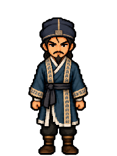
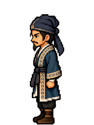
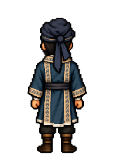

Game-background preview and character selectorWu Yong · Chief Strategist
Standing candidate: slim scholarly build, narrow eyes, fine moustache and pointed chin beard, navy wrapped scarf, teal robes and pale patterned edging from his own portrait. Front, left and back share the original Classic proportions and palette. Right-facing art and animation remain pending.

Front
Left
Back192 × 256 cells at 24 × 32 logical world size. Source colours preserved; one common nearest-neighbour scale.
Native transparent sourceRevision 2: front head faces straight forward; original left and back PNGs retained exactly.